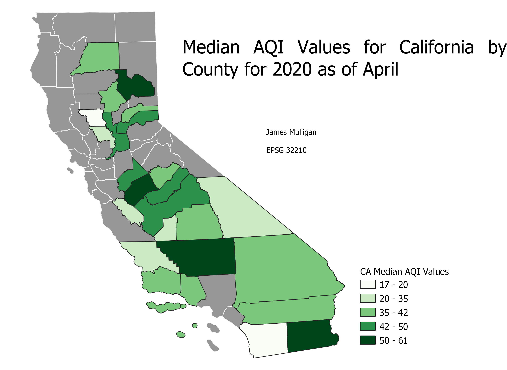
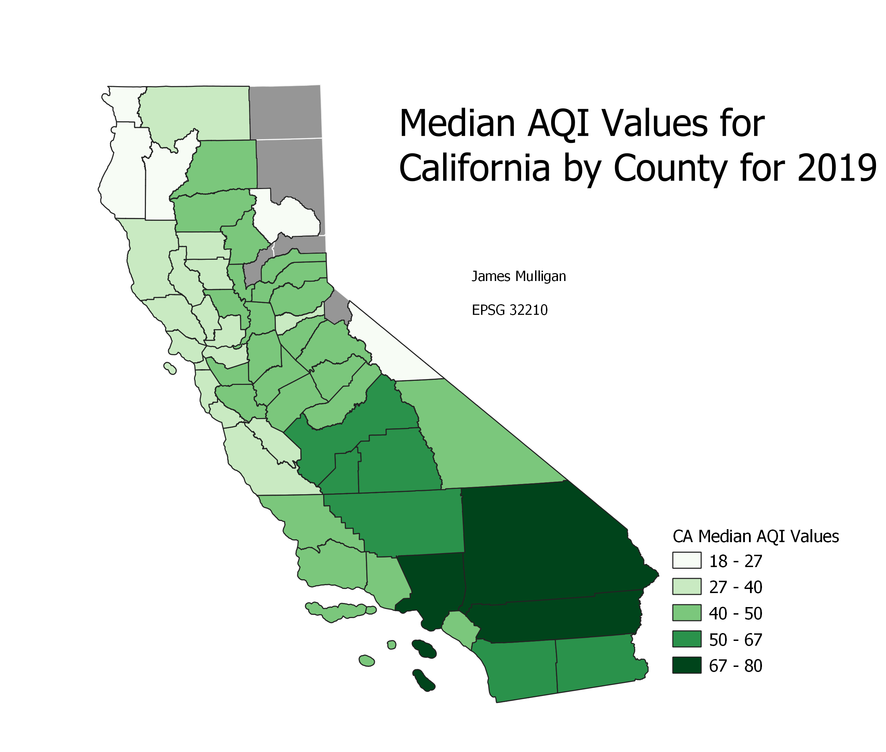

James Mulligan: Homework 9, Choropleth Project 3
Choropleth Using the UTM 10 North
This projection is largely centered on califonia, making it ideal for this use.

I looked at the Median AQI values for the counties where I could find data because California has had no shortage of forest fires recently which are contributuing to horrible air quality for many. Sadly the data I found was only accurate through April for 2020 and so do not include some of the most severe forest fires which have occurred so far this year.

I included both 2020 and 2019 because there is much less available data for 2020 as of now.
Data used for this project:
Shapefile of California Counties
Cleaned AQI Data (2020)
Cleaned AQI Data (2019)
Original Data Source for Data
Original Data Source for Shapefile